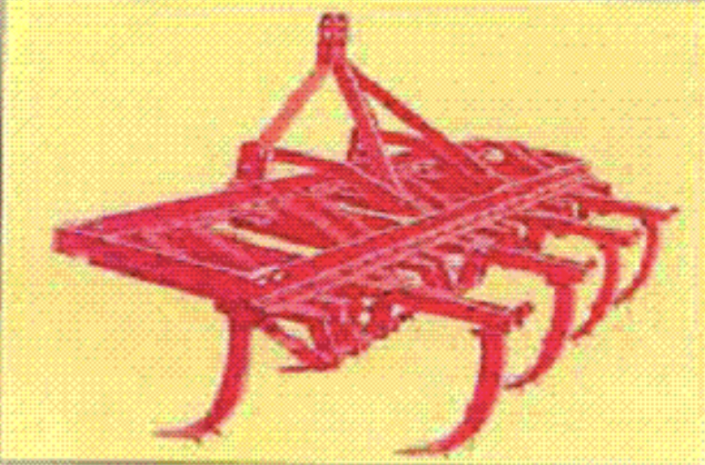
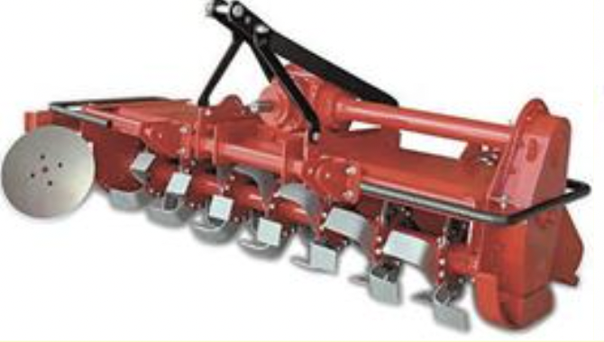
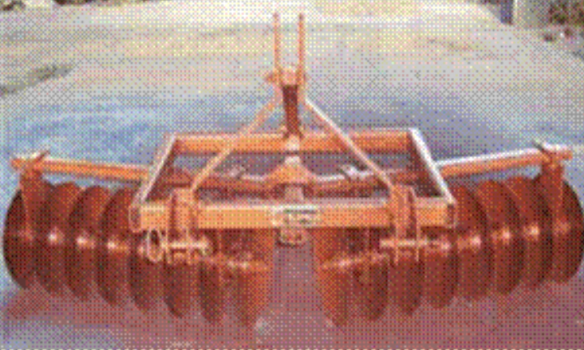

4.0 जुताई के उपकरण
- 4.1. मोल्ड बोर्ड हल
- 4.2 डिस्क हल
- 4.3 टाइन टाइप कल्टीवेटर
- 4.4. डिस्क हैरो
- 4.5 पावर टिलर ऑपरेटेड रोटरी टिलर
- 4.6 रोटावेटर
- 4.7 पुल्वराइजिंग रोलर
- 4.8 धान हैरो/पुडलर
4.1 मोल्ड बोर्ड हल

विशेषताएं
यह ट्रैक्टर से चलने वाला उपकरण है और इसमें शेयर प्वाइंट, शेयर, मोल्ड बोर्ड, भूस्खलन, मेंढक, टांग, फ्रेम और अड़चन प्रणाली शामिल है। शेयर प्वाइंट बार प्रकार का होता है और उच्च कार्बन स्टील या कम मिश्र धातु इस्पात से बना होता है। शेयर भी उच्च कार्बन स्टील या कम मिश्र धातु इस्पात से बना है। दोनों उपयुक्त कठोरता (लगभग 45 एचआरसी) के लिए कठोर और टेम्पर्ड हैं। हल का काम हाइड्रोलिक सिस्टम और थ्री-पॉइंट लिंकेज द्वारा नियंत्रित किया जाता है। इसका बार-पॉइंट इसे मिट्टी के कड़ेपन को तोड़ने के लिए उपयुक्त बनाता है।
विशेष विवरण:
| लंबाई (मिमी) | : 1778 |
| चौड़ाई (मिमी) | : 889 |
| ऊंचाई (मिमी) | : 1092 |
| वजन (कि.ग्रा) | : 253 |
| संचालन की गति (किमी / घंटा) | : 3-4 |
| कवर किया गया क्षेत्र (हेक्टेयर / घंटा) | : 0.35 |
| क्षेत्र दक्षता (%) | : 70-80 |
| बिजली की आवश्यकता (एचपी/किलोवाट) | : 45/33.75, ट्रैक्टर |
उपयोग:
प्राथमिक जुताई कार्यों के लिए हल का उपयोग किया जाता है। यह कचरे को काटता है और पूरी तरह से दबा देता है। इसका उपयोग हरी खाद की फसल को मिट्टी के नीचे सड़ने के लिए बदलने के लिए भी किया जाता है, जो ह्यूमस को जोड़ता है मिट्टी। खाद, खेत की खाद या चूना जब खेत में फैला दिया जाता है, तो मोल्ड बोर्ड हल होता है इन सामग्रियों को मिट्टी में मिलाने और मिलाने के लिए उपयोग किया जाता है।
मशीन की लागत : ₹30,000/-
4.2 डिस्क हल

विशेषताएं
हल में सामान्य मेनफ्रेम, डिस्क बीम असेंबली, रॉकशाफ्ट असेंबली और एक भारी स्प्रिंग लोडेड फ़रो व्हील और एक गेज व्हील होता है। कुछ मॉडलों में डिस्क हल को आवश्यकता के अनुसार उप बीम असेंबलियों को जोड़कर या हटाकर 2, 3 या 4 बॉटम्स के रूप में संचालित करने के लिए डिज़ाइन किया गया है। कट की वांछित चौड़ाई प्राप्त करने के लिए डिस्क कोण 40º से 45º तक होता है और झुकाव कोण प्रवेश के लिए 15º से 25º तक होता है। हल के डिस्क उच्च कार्बन स्टील या मिश्र धातु इस्पात से बने होते हैं और किनारों को कठोर और तेज किया जाता है। डिस्क को पतला रोलर बेयरिंग पर लगाया जाता है। प्रदान किए गए स्क्रैपर्स चिपचिपी मिट्टी में डिस्क पर मिट्टी के निर्माण को रोकते हैं। फ़रो स्लाइस वक्रता के साथ सवारी करती है और फेंकने से पहले कुछ हद तक चूर्णित हो जाती है।
विशेष विवरण:
| खोले गए कुंडों की संख्या | : 2-4 |
| डिस्क आकार (मिमी) | : 600-800 |
| लंबाई (मिमी) | : 1180-2362 |
| चौड़ाई (मिमी) | : 889-1194 |
| ऊंचाई (मिमी) | : 1092-1118 |
| प्रति डिस्क कट की चौड़ाई (मिमी) | : 200-300 |
| Adjustable working width (मिमी) | : 600-1200 |
| वजन (कि.ग्रा) | : 3000 तक |
| उत्पादन क्षमता (हेक्टेयर / घंटा) | : 0.25-0.37 |
| बिजली की आवश्यकता (एचपी/किलोवाट) | : 35-50/26.25-37.5, ट्रैक्टर |
उपयोग:
डिस्क हल का उपयोग प्राथमिक जुताई के लिए किया जाता है और यह विशेष रूप से कठोर और शुष्क, कूड़ेदान, पथरीली या स्टम्पी भूमि की स्थिति में और मिट्टी में उपयोगी होता है जहां दस्त एक बड़ी समस्या है।
मशीन की लागत : ₹30,000/-
4.3 टाइन टाइप कल्टीवेटर
विशेषताएं
इसमें एक फ्रेम, प्रतिवर्ती फावड़ियों के साथ टाइन, अड़चन प्रणाली और भारी शुल्क वाले स्प्रिंग्स होते हैं। वसंत का कार्य कृषक टाइन को किसी कठोर वस्तु के आने पर टूटने से बचाना है फावड़े के साथ या टाइन के नीचे संपर्क करें। फावड़े लंबे जीवन के लिए हीट-ट्रीटेड स्टील से बने होते हैं। इम्प्लीमेंट माउंटेड टाइप का होता है और ट्रैक्टर के हाइड्रोलिक सिस्टम द्वारा नियंत्रित होता है।
विशेष विवरण:
| लंबाई (मिमी) | : 1960-3000 |
| चौड़ाई (मिमी) | : 970-1560 |
| चौड़ाई (मिमी) | : 1070-1350 |
| टाइन की संख्या | : 7, 9,11 or 13 |
| वसंत तार का व्यास (मिमी) | : 9.5 |
| वजन (कि.ग्रा) | : 00-350 |
| उत्पादन क्षमता (हेक्टेयर / घंटा) | : 0.5 -0.6 |
| शक्ति का स्रोत (एचपी/किलोवाट) | : 35/26.25, ट्रैक्टर |
उपयोग:
कल्टीवेटर का उपयोग सूखी और गीली दोनों तरह की मिट्टी में बीज तैयार करने के लिए किया जाता है। इसका उपयोग पंक्ति से पंक्ति की दूरी के अनुसार टाइनों को समायोजित करके अंतरसांस्कृतिक संचालन के लिए भी किया जाता है। इसका उपयोग पोखर के प्रयोजनों के लिए भी किया जाता है|
मशीन की लागत : ₹ 25,000/- से ₹30,000/-
4.4 डिस्क हैरो

विशेषताएं
इसमें मजबूत फ्रेम और डिस्क के गिरोह होते हैं जो प्रत्येक एक सामान्य शाफ्ट पर लगे होते हैं और इन्हें वर्गीकृत किया जा सकता है सिंगल और डबल एक्शन (अग्रानुक्रम) में। अग्रानुक्रम डिस्क हैरो में, सामने गिरोह पर डिस्क मिट्टी फेंकते हैं जावक और पीछे गिरोह आवक। इसलिए, ऑफसेट डिस्क हैरो द्वारा कोई भी मिट्टी काटी नहीं जाती है। डिस्क हैं उच्च कार्बन स्टील या मिश्र धातु इस्पात से बना; काटने के किनारों को कठोर और उपयुक्त करने के लिए टेम्पर्ड किया जाता है कठोरता गिरोहों को अड़चन फ्रेम पर किसी भी दिशा में ले जाया जा सकता है। पीछे के गिरोह को स्थानांतरित किया जा सकता है सामने गिरोह के समान राशि। बागों या वृक्षारोपण में काम करते समय, हैरो को दाएं या बाएं से ऑफसेट किया जा सकता है, इस प्रकार मिट्टी को पेड़ों की ओर या दूर फेंक दिया जा सकता है। ऑफसेट-सुविधा पेड़ों की कम लटकती शाखाओं के तहत काम करना संभव बनाती है। बाहरी रिम पर नॉच वाली डिस्क भी खरपतवार से प्रभावित क्षेत्रों में संचालन के लिए उपलब्ध हैं। तीन बिंदु हाइड्रोलिक लिंकेज और हाइड्रोलिक नियंत्रण इसे अत्यधिक गतिशील बनाता है। यह ट्रेलेड टाइप वर्जन के रूप में उपलब्ध है।
विशेष विवरण:
| लंबाई (मिमी) | : 1980-2260 |
| चौड़ाई (मिमी) | : 1150-1900 |
| ऊंचाई (मिमी) | : 1143-1350 |
| डिस्क की संख्या | : 10-16 |
| डिस्क का व्यास (मिमी) | : 457-660 |
| डिस्क की पिच: | : 228-280 |
| वजन (कि.ग्रा) | : 330-490 |
| क्षमता (हेक्टेयर/दिन) | : 2.5 |
| बिजली की आवश्यकता (एचपी/किलोवाट) | : 20-60/15-45, ट्रैक्टर |
उपयोग:
बुवाई के लिए मिट्टी तैयार करना, कार्बनिक पदार्थों और अवशेषों को दफनाना और मिट्टी को हवा देना और मातम को खत्म करें। यह क्षेत्र डिस्किंग के लिए आदर्श है, विशेष रूप से बागों, वृक्षारोपण और दाख की बारी में। यह मेड़ों और बाड़ के पदों के करीब पेड़ों के नीचे काम करने के लिए उपयुक्त है।
कीमत: ₹ 35,000/-
4.5 पावर टिलर ऑपरेटेड रोटरी टिलर

विशेषताएं
पावर टिलर 8-15 hp डीजल इंजन के साथ संचालित होता है। इंजन की शक्ति को प्रेषित किया जाता है वी-बेल्ट चरखी के माध्यम से जमीन के पहिये। को बनाए रखने के लिए पीछे की तरफ एक टेल व्हील दिया गया है संचालन गहराई। रोटरी निराई संलग्नक निराई करता है। रोटरी वीडर में डिस्क की तीन पंक्तियाँ होती हैं जो प्रत्येक डिस्क पर वैकल्पिक रूप से विपरीत दिशाओं में 6 घुमावदार ब्लेड के साथ घुड़सवार होती हैं। ये ब्लेड मिट्टी को काटने और मल्चिंग करने में मदद करते हैं। रोटरी टिलर की कवरेज की चौड़ाई 500 मिमी और गहराई है फसली खेत में मिट्टी को निराई और गीली घास में समायोजित किया जा सकता है।
विशेष विवरण:
| लंबाई (मिमी) | : 2400 |
| चौड़ाई (मिमी) | : 1750 |
| ऊंचाई (मिमी) | : 1100 |
| पंक्ति से पंक्ति रिक्ति (मिमी) | : 450 |
| वजन (कि.ग्रा) | : 200 |
| क्षमता (हेक्टेयर / घंटा)) | : 0.12 -0.15 |
उपयोग:
यह टैपिओका, कपास, गन्ना, मक्का जैसी फसलों में खरपतवारों के यांत्रिक नियंत्रण के लिए है। टमाटर और दालें जिनकी पंक्तियों की दूरी 450 rnm से अधिक है। अटैचमेंट जैसे स्वीप ब्लेड्स, रिगर, ट्रेलर मशीन के साथ इस्तेमाल किया जा सकता है। हल्के पावर टिलर का उपयोग नीचे जुताई के लिए भी किया जा सकता है पहाड़ी कृषि और छत पर खेती।
मशीन की लागत : ₹1,25,000/-
4.6 रोटावेटर
विशेषताएं
इसमें एक स्टील फ्रेम, एक रोटरी शाफ्ट होता है जिस पर ब्लेड लगे होते हैं, पावर ट्रांसमिशन सिस्टम और गियरबॉक्स। ब्लेड एल-प्रकार के होते हैं, जो मध्यम कार्बन स्टील या मिश्र धातु इस्पात से बने होते हैं, कठोर और उपयुक्त कठोरता के लिए टेम्पर्ड। ट्रैक्टर का पीटीओ रोटावेटर चलाता है। पीटीओ की रोटरी गति है गियरबॉक्स और ट्रांसमिशन सिस्टम के माध्यम से ब्लेड ले जाने वाले शाफ्ट को प्रेषित किया जाता है। एक अच्छा बीज बिस्तर और रोटावेटर के सिंगल पास में मिट्टी का चूर्णीकरण किया जाता है।
विशेष विवरण:
| लंबाई (मिमी) | : 1760-2080 |
| चौड़ाई (मिमी) | : 950-1050 |
| ऊंचाई (मिमी) | : 935-1110 |
| रोटावेटर की कार्य चौड़ाई (मिमी) | : 1000-2000 |
| ब्लेड का आकार | : एल-आकार |
| ब्लेड की मोटाई (मिमी) | : 7-10 |
| फ्लैंगेस (निकला हुआ किनारा) की कुल संख्या | : 6-8 |
| प्रति निकला हुआ किनारा ब्लेड की संख्या | : 6 |
| रोटर शाफ्ट का व्यास (मिमी) | : 70-90 |
| रोटर व्यास (मिमी) | : 420-435 |
| रोटर शाफ्ट की क्रांति (आरपीएम) | : 210-237 |
| वजन (कि.ग्रा) | : 280-450 |
| उत्पादन क्षमता (हेक्टेयर / घंटा) | : 0.25-0.26 |
| बिजली की आवश्यकता (एचपी/किलोवाट) | : 35/26.5 या ऊपर, रैक्टर |
उपयोग:
यह सूखे और दोनों क्षेत्रों में एक ही पास में सीड बेड तैयार करने के लिए उपयुक्त है आर्द्रभूमि की स्थिति। यह भूसे और हरी खाद को खेत में शामिल करने के लिए भी उपयुक्त है।
मशीन की लागत : ₹80,000/-
4.7 पल्वराइजिंग रोलर

विशेषताएं
पुल्वराइज़िंग रोलर व्यावसायिक रूप से उपलब्ध कल्टीवेटर से लगाव है। पल्सवराइजिंग रोलर में स्टार व्हील, सेंट्रल शाफ्ट, पुलवराइजिंग सदस्य, माउंटिंग शामिल हैं लिंक और गहराई नियंत्रण पहिया। चूर्णित करने वाले सदस्य लॉन घास काटने वाले ब्लेड के आकार के समान होते हैं और कास्ट स्टार व्हील्स में इस तरह से डाला जाता है कि यह पेचदार आकार और उत्तरोत्तर बनाता है मिट्टी के संपर्क में आकर उसे तोड़ देता है। रोलर को कल्टीवेटर से दो . की सहायता से जोड़ा जाता है माउंटिंग लिंक जिसमें एक तरफ आवास और दूसरी तरफ तन्यता स्प्रिंग्स होते हैं।
विशेष विवरण:
| लंबाई (मिमी) | : 950 |
| चौड़ाई (मिमी) | : 2340-2760 |
| ऊंचाई (मिमी) | : 390 |
| कार्य चौड़ाई (मिमी) | : 2010-2385 |
| स्टार पहियों की संख्या | : 6 |
| स्टार पहियों के बीच की दूरी (मिमी) | : 400-475 |
| स्टार व्हील की सामग्री | : कच्चा लोहा |
| दस्ता व्यास (एम) | : 35 |
| चूर्णित करने वाले सदस्यों की संख्या | : 6 |
| स्प्रिंग्स की संख्या | : 2 |
| मशीन का वजन (किलो) | : 115-125 |
| बिजली की आवश्यकता (एचपी/किलोवाट) | : 35/26.25, ट्रैक्टर या ऊपर |
उपयोग:
पल्वराइजिंग रोलर्स का उपयोग पोखर बनाने के साथ-साथ सूखे बीज बिस्तर तैयार करने के लिए किया जाता है। दो रनों में यह अच्छा पोखर क्षेत्र बनाता है। यह 20-35% ईंधन की खपत और 20-30% पानी बचाता है पारंपरिक विधि की तुलना में आवश्यकता।
मशीन की लागत : ₹30,000/-
4.8 धान हैरो/पुडलर
विशेषताएं
धान के हैरो का उपयोग चावल के खेत में गीली अवस्था में पोखर बनाने के लिए किया जाता है। इसमें एक बॉक्स फ्रेम पर लगे डिस्क के दो गैंग होते हैं। यह तीन बिंदुओं पर लगाया गया है ट्रैक्टरों और लकड़ी के तख्तों का जुड़ाव खेत को समतल करने के लिए हैरो के पिछले हिस्से में लगा दिया जाता है।
विशेष विवरण:
| गिरोह की संख्या | : दो संख्याओं |
| गिरोह बोल्ट | : 2.5 से.मी. चौकोर ठोस बार |
| डिस्क के बीच की दूरी (मिमी) | : 52 |
| डिस्क की संख्या | : 16 |
| डिस्क व्यास (मिमी) | : 508 |
| डिस्क का प्रकार | : मैदान |
| केन्द्रों | : ब्रैकेट स्पूल |
| कट की चौड़ाई (मिमी) | : समायोज्य |
| वजन (किग्रा) | : 262 |
| उत्पादन क्षमता (हेक्टेयर / घंटा) | : 0.35-0.50 |
| बिजली की आवश्यकता (एचपी/किलोवाट) | : 40-45/30-33.75, ट्रैक्टर |
उपयोग:
इसका उपयोग गीले चावल के खेत में पोखर बनाने के लिए किया जाता है। इस उपकरण का उपयोग क्षेत्र को सुचारू रूप से, जल्दी और कुशलता से हल करने में मदद करता है।